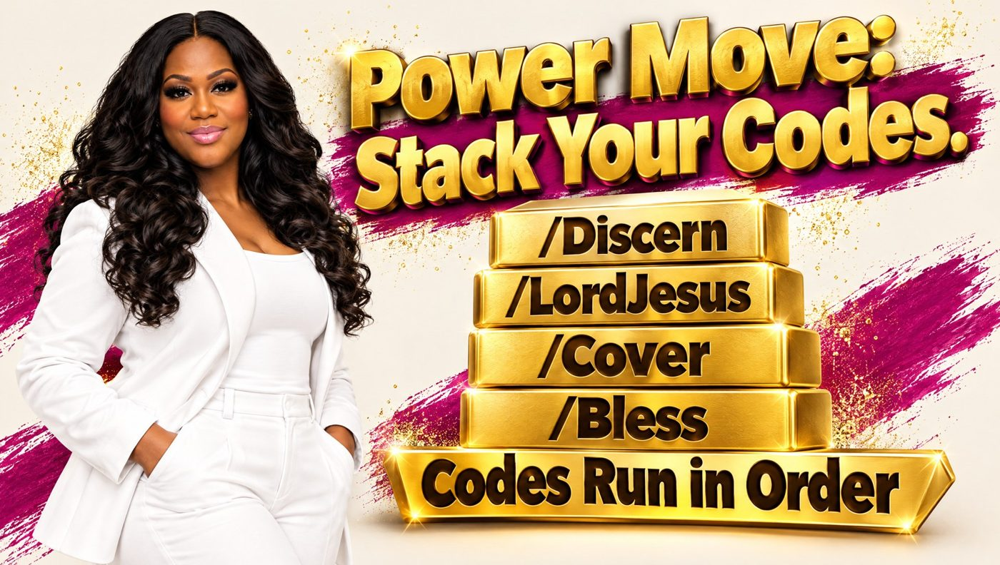

Business Circle · Class Workbook
AI Made Simple Workbook
Keep this page open during class. Check off each step as you go, and use the gold Copy buttons so you never have to retype a code.
Before class
Get ready at home
Each one takes a few minutes. Use the same email for all three so it’s easy to remember.
How to talk to AI
The Simple Recipe: Who · What · How
Kingdom Command Codes
The P.R.A.Y. Method

Step P
Your setup block
- Tap Copy setup block below.
- Open a new chat in Claude and paste it in. Press send.
- Wait for Claude to reply “Kingdom codes ready.”
Make them permanent: paste the setup block into a Claude Project’s instructions. Every chat in that Project will know your codes, with no pasting needed.
Step R
Your 20 codes
Tap Copy, paste it into Claude, then type your situation after the code. Each card shows an example.
Stay safe
A few rules that protect you
Never share
- Social Security numbers
- Bank or card numbers
- Passwords or PINs
- Private medical details
Always
- Double-check facts and numbers
- Verify Bible verses
- Ask a real expert for big decisions
- Hang up on “urgent” money calls
AI is a tool. You bring the wisdom. These codes support your walk; they don’t replace your pastor, a counselor, or a doctor.